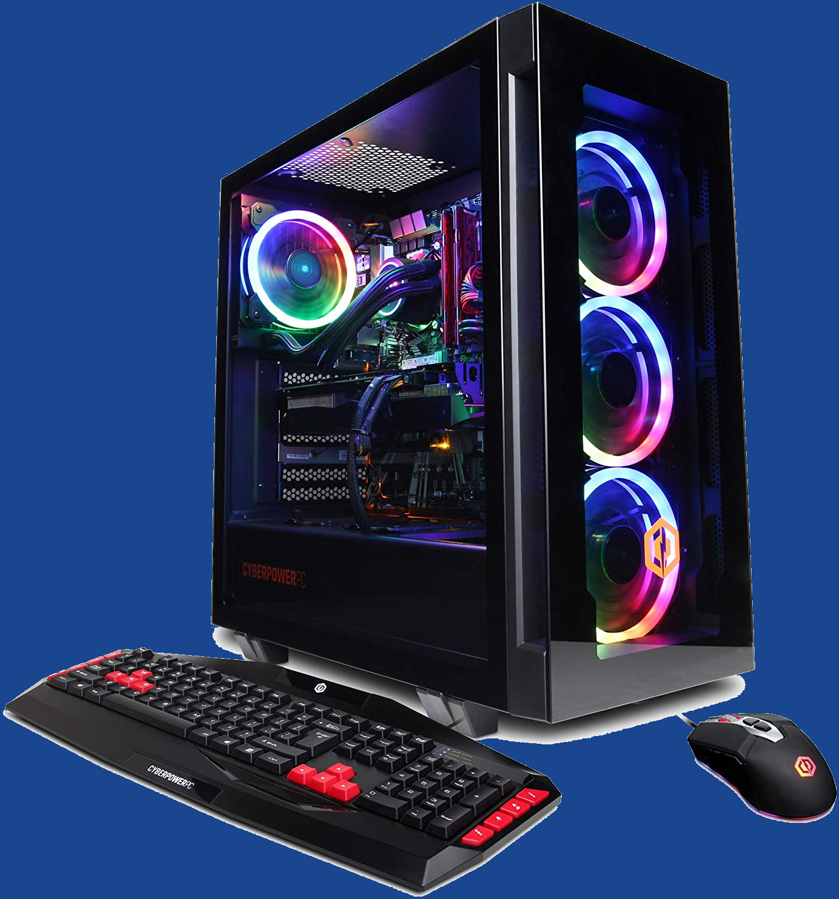
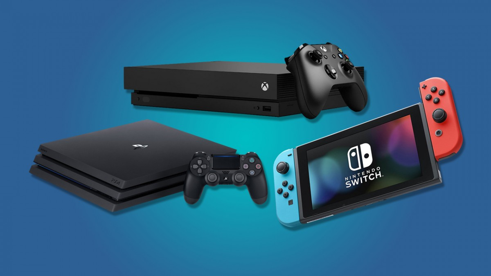

VS.

The personal computer and any other form of console, whether it be an Xbox, Playstation or Nintendo Switch, offers various forms of games to be played.
However, a key difference lies especially between a personal computer or laptop, and consoles as a whole.
This, obviously, is the fact that consoles (mainly) utilize some form of a controller with limited buttons, whereas a computer has a mouse and keyboard, as well as the option to use certain controllers.
Here, we will compare the two, and show how the PC wins in terms of capabilities, and that it is overall a better choice (in most cases) for the gaming experience.